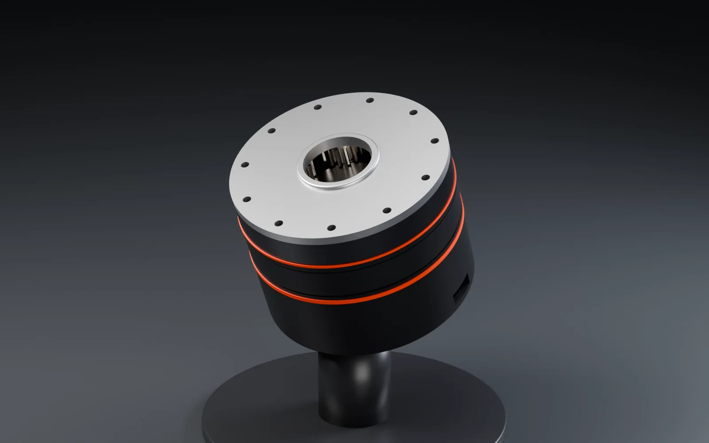
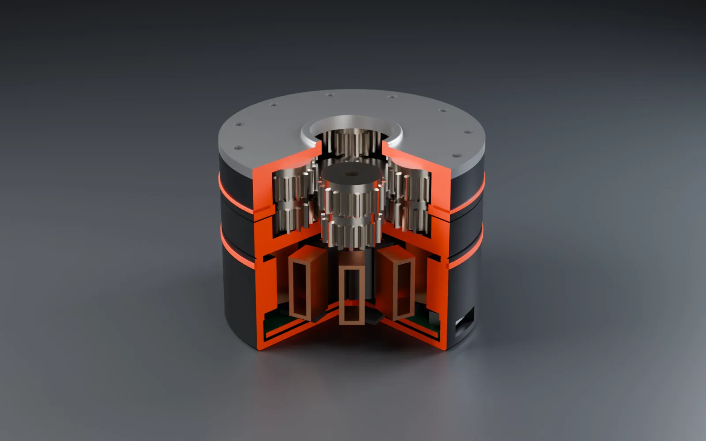
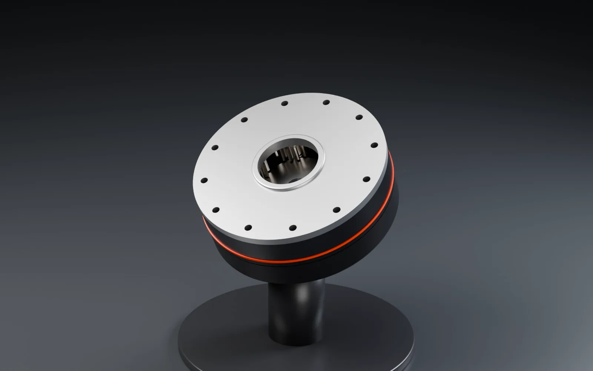
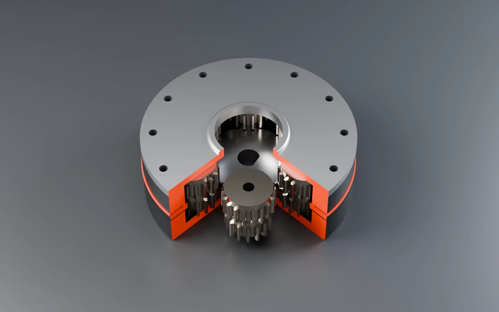
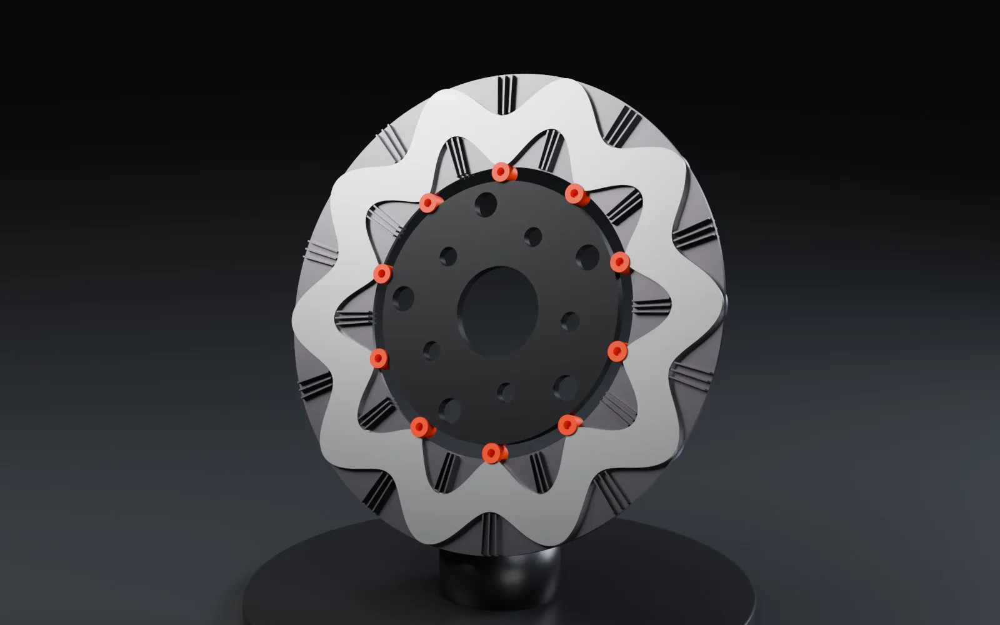
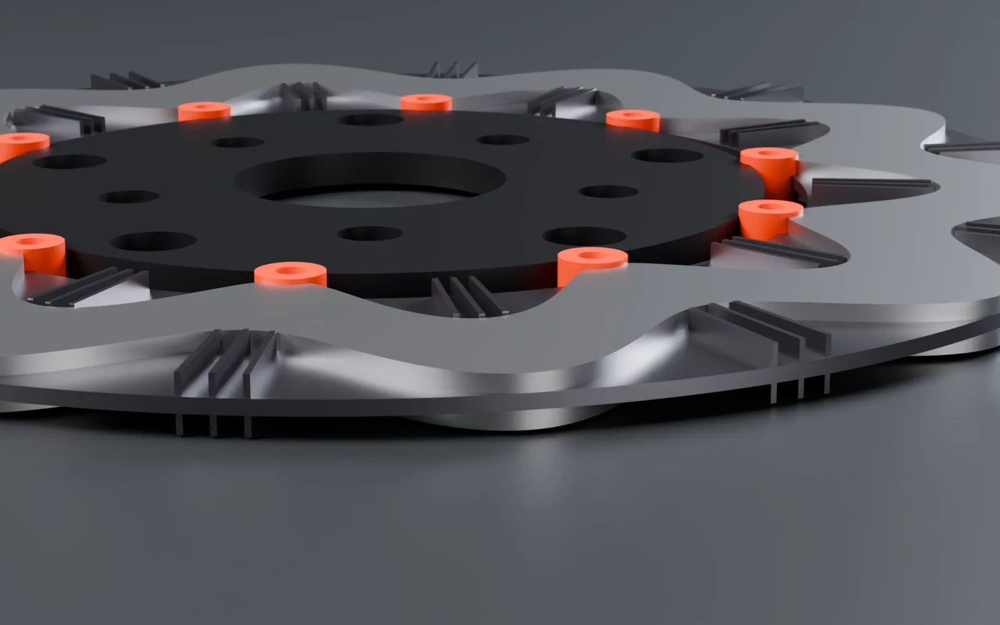

Products
Everything after the motor.
Buy the complete Joint, or take the parts inside it for your own actuator. Every layer is designed to work with the others.
01 · First product
TORRQE Joint
A complete robot actuator. A frameless motor, the Drive, the Core reducer and superelastic bearings, sealed in one short unit. Bolt it in, plug it in, command torque or position.
- Gear and bearing in one, so it is short and stiff
- Zero-backlash design for precise, repeatable motion
- Runs without oil, and doesn't rust
- One family from wrist to hip
How it moves: the housing bolts to one part of the robot and the output ring bolts to the next. The motor spins the Core, the Core turns the output ring slower and with far more force, and the limb swings.
- Sizes
- J50 · J76 · J110 (planned)
- Reducer
- TORRQE Core, 33:1
- Control
- TORRQE Drive, on board
- Bearings
- TORRQE superelastic


OUTSIDEINSIDE02 · Reducer
TORRQE Core
A gear-bearing reducer. Rollers on the planets and rings carry the load, so the gears are also the bearing. You lose the separate bearing, the length and the play that comes with it.
- 33:1 from one compact gear set
- Zero-backlash design
- Hollow-shaft friendly, short axial length
- Made in steel, or 60NiTi for no-oil duty
Core or Joint? The Core is just the gearbox. The Joint is the whole actuator, with a Core inside it. Already have a motor? Buy the Core. Want it ready to bolt in? Buy the Joint.
- Ratio
- 33:1
- Outer diameter
- 76 mm
- Height
- 28 mm
- Planets
- 6


OUTSIDEINSIDE03 · Motor control
TORRQE Drive
Brushless motor control that stays smooth when the motor barely turns. It blends two ways of measuring speed, so a joint can creep, hold and reverse without the stutter ordinary controllers show.
- Smooth torque at near-zero speed
- Fits inside the Joint or runs your own motor
- Torque, speed and position modes
04 · Bearings and materials
TORRQE Bearings
Balls and races made from superelastic nickel-titanium alloys. They take a hit that would dent steel and spring back, they can't rust, and they run with water or no lubricant at all.
- Dent-resistant under shock
- Corrosion-proof, non-magnetic
- Small balls for compact joints, and 60NiTi races and gears
05 · Gears
TORRQE Lightgear
A carbon-fiber composite gear body with a steel toothed rim. The teeth stay hard where they mesh; the body loses most of its weight and damps noise.
- Much lighter than all-steel gears
- Quieter, with less vibration
- Drop-in for drivetrains and large reducers
06 · Oil-free surfaces
TORRQE Surface
Solid lubricant coatings and bushings for parts that can't use oil: very hot, very cold, or in a vacuum. The coating is the lubricant.
- No oil to leak, freeze or boil off
- Coating for shafts and seals, solid parts for bushings
- Made for space mechanisms and hot machinery
07 · Braking
TORRQE Rotor
A wave-shaped brake disc. The pad rubs only the wave; thin finned plates around it pull the heat away. About a third the weight of cast iron, made from steel.
- Mass (336 mm)
- 3.7 kg
- Thickness
- 10 mm
- Pads
- Standard pads


WHOLEDETAIL